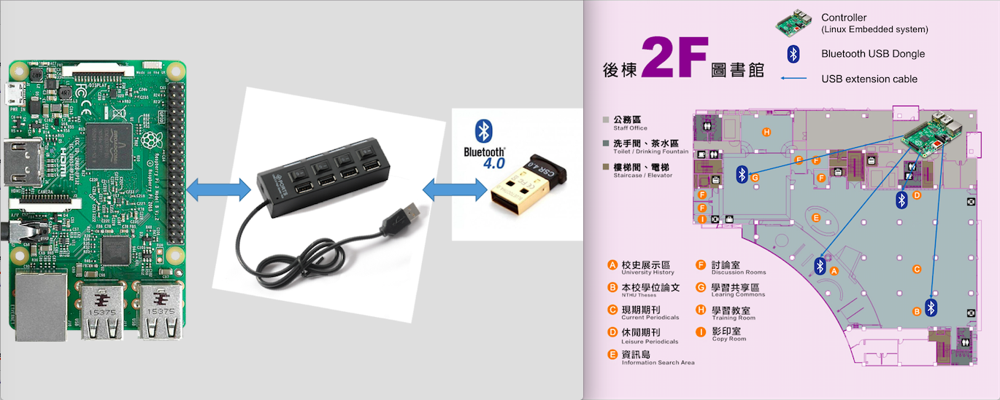
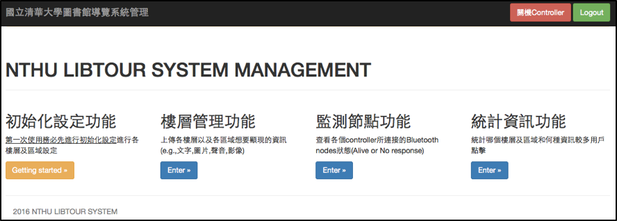
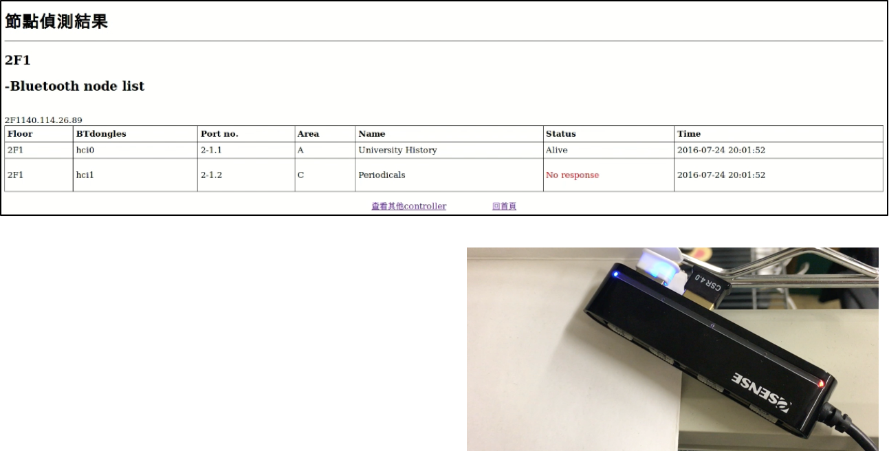

National Tsing Hua University Library Wireless Tour Guide
Developed wireless tour guide system for NTHU library.

Project Background : Thesis Project
Project supervisor : Dr. Yu-Ren Tsai
Abstract
A wireless tour guide system to provide the user library tour service by placing at least one Linux-based embedded system(Controller) on every floor and number of Bluetooth USB dongles connected by the controller via USB HUB.
Scenario: When a user is in the coverage of a tour node via Bluetooth technology, the APP of the library tour will show the user's location. Also, it will provide a tour file of this area for the user. (e.g., Photo, introduction, audio, video…)
Architecture Design
The program focused on how to manage Controllers of every floor and so many nodes. By building the content management server, the program implemented three features of server: receiving, processing, sending. I Developed the web application as the geographic user interface(GUI) on the server-side, and thus the admin could operate the system efficiently.
The web application using the MQTT protocol, which is standardized by OASIS, to communicate with the controller. By the design of the MQTT topic and messages, the program implemented the initializing feature, floor management feature, monitor Bluetooth nodes feature, and statistics feature. With the monitoring feature, the admin will know the status of nodes (no response or alive), and the statistics feature will let the admin know the hits of each file type. As a result, they will know how to improve user experience through statistic information.
Content-Management Server
Admin - GUI Interface
Index
Monitor Feature :
Alive
No response
